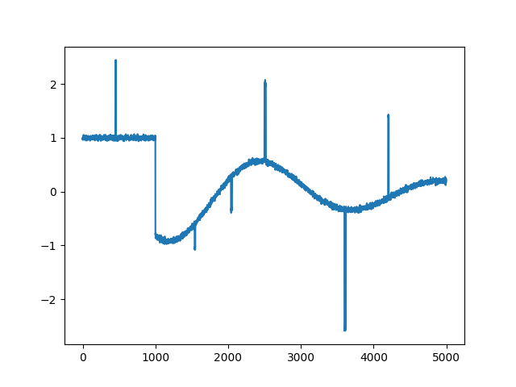
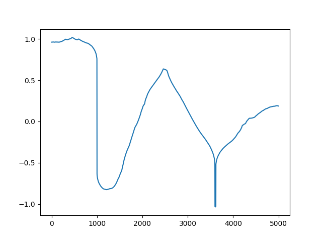
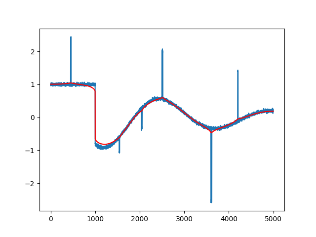

Bir sinyalden, görüntüden gürültü çıkartmak için optimizasyon kullanılabilir. Orijinal sinyal $x$'in $y = B x + n$ ile bir $n$ gürültüsü eklenerek bozulduğu (corrupted) farzedilebilir ($B$ bir değişim matrisidir, tutarlı, bilinen değişimleri temsil eder) biz eldeki $y$ ile $x$'i kestirmeye uğraşırız. Fakat literatürde iyi bilindiği üzere $x$'i $y$'den tahmin etmeye uğraşmak kötü konumlanmış (ill-posed) bir sorudur. Çözüm olabilecek pek çok $x$ bulunabilir, bu sebeple arama alanını bir şekilde daraltmak gerekir, ve bunun için bir tür düzenlileştirme / regülarizasyon (regularization) kullanılması şarttır [3].
Bir sayisal resimden gürültü çıkartma alanında iyi bilinen bir yöntem, problemi çift hedefli bir halde konumlandırmak [4],
$$ || x-x_{cor}||_2, \qquad \phi_{tv} (x) = \sum_{i=1}^{n-1} | x_{i+1} - x_i | \qquad (1) $$
Burada $x_{cor} \in \mathbb{R}^n$ bize verilen bozulmuş sinyal, $x \in \mathbb{R}^n$ ise bizim bulmak istediğimiz, gürültüsü çıkartılmış sinyal, $\phi_{tv}$ ise tam varyasyon fonksiyonu. Üstteki iki hedefi minimize etmek istiyoruz, böylece aynı anda hem sinyalin kendi içindeki varyasyonu azaltan hem de bozulmuş sinyale mümkün olduğunca yakın duran bir gerçek $x$ elde edebilelim.
Her iki hedef fonksiyonunu birleştirip tek bir fonksiyon haline getirip onu kısıtlanmamış (unconstrained) bir optimizasyon problemi olarak çözebiliriz,
$$ \psi = || x-x_{cor}||_2 + \mu \phi_{tv} $$
ki $\mu$ bizim seçeceğimiz bir parametre olabilir. Çözüm için mesela Newton metodunu kullanabiliriz, fakat tek bir problem var, Newton ve ona benzer diğer optimizasyon metotları için türev almak gerekli, fakat $\phi_{tv}$'deki L1-norm'unun (tek boyutta mutlak değer fonksiyonu) $x=0$'da türevi yoktur (birinci terimdeki Oklit normunun karesi alındığı için onun iki kere türevi alınabilir). Bu durumda $\phi_{tv}$'yi yaklaşık olarak temsil edebilirsek, onun da türevi alınır hale gelmesi sağlayabiliriz. Bu yeni fonksiyona $\phi_{atv}$ diyelim,
$$ \phi_{atv} = \sum _{i=1}^{n-1} \left( \sqrt{ \epsilon^2 + (x_{i+1})-x_i } - \epsilon \right) $$
ki $\epsilon > 0$ yaklaşıklamanın seviyesini ayarlıyor. Bu fonksiyonun iyi bir yaklaşıklama olduğunu görmek zor değil, tabii deneyerek görelim,
import numpy as np
eps = 1e-6
mu = 50.0
def phi_tv(x):
return np.sum(np.abs(np.diff(x)))
def phi_atv(x):
return np.sum(np.sqrt(eps + np.power(np.diff(x),2)) - eps)
def f(u):
return np.sum(np.power(u-xcor, 2)) + mu*phi_atv(u)
xcor = np.random.randn(1000)
print (phi_tv(xcor))
print (phi_atv(xcor))
1037.4372101629049
1037.438996069622
Üstteki fonksiyonun iki kez türevi alınabilir. Şimdi analitik şekilde devam etmeden önce pür sayısal açıdan bir çözüme bakalım. Üstteki fonksiyonları direk kodlayarak ve sayısal türev üzerinden işleyebilen bir kütüphane çağrısıyla hedefi minimize edelim, eldeki sinyal,
import pandas as pd
df = pd.read_csv('xcor.csv',header=None)
xcor = np.reshape(np.array(df[0]), (5000,1))
plt.plot(range(len(xcor)), xcor)
plt.savefig('func_60_tvd_01.png')

Kütüphane çağrısı ile
u0 = np.zeros(len(xcor))
print (f(u0))
from scipy.optimize import minimize, Bounds, SR1, BFGS
opts = {'maxiter': 400, 'verbose': 2}
res = minimize (fun=f,
x0=u0,
options=opts,
jac='2-point',
hess=BFGS(),
method='trust-constr'
)
plt.plot(range(5000), res.x)
plt.savefig('func_60_tvd_02.png')

Sonuç fena olmadı. Fakat üstteki yaklaşımın hesabı uzun sürecektir, eğer eldeki problem hakkında bazı ek şeyler biliyorsak, bu bilgileri dahil ederek elde edilen çözüm daha hızlı olabilir. Mesela analitik olarak türevler Jacobian ve Hessian bulunabilir, Newton adımı elle kodlanabilir, ayrıca problemdeki matrislerde muhtemel bir seyreklikten (sparsity) faydalanılabilir.
Hedef fonksiyonu $\psi(x)$ diyelim, icin birinci ve ikinci turev,
$$ \nabla \psi(x) = 2 (x-x_{cor}) + \mu \nabla \phi_{atv}(x), \qquad \nabla^2 \psi(x) = 2 I + \mu \nabla^2 \phi_{atv} (x) $$
Zincirleme Kuralı uygulandı tabii, ve şimdi $\phi_{atv}$ üzerindeki türevleri bulmak gerekiyor. Sorun değil, daha önceki yaklaşıklamayı bunun için yapmıştık zaten. Yaklaşık fonksiyonu genel olarak belirtirsek,
$$ f(u) = \sqrt{\epsilon^2 + u^2} - \epsilon $$
Bu fonksiyonun 1. ve 2. türevi
$$ f'(u) = u(\epsilon^2 + u^{-1/2} ), \qquad f"(u) = \epsilon^2 (\epsilon^2 + u^2)^{-3/2} $$
Simdi bir $F$ tanimlayalim,
$$ F(u_1,..., u_{n-1}) = \sum_{i=1}^{n-1} f(u_i) $$
Yani $F(u)$ $u$'nun bilesenlerinin yaklasik L1 norm'unun toplamidir. Nihai amacimiz bu tanimdan bir $\phi_{atv}$ ifadesine ulasmak. $F$'in gradyani ve Hessian'i
$$ \nabla F(u) = \left[\begin{array}{ccc} f'(u_1) & \dots & f'(u_{n-1}) \end{array}\right] $$
$$ \nabla^2 F(u) = \mathrm{diag} \left[\begin{array}{ccc} f"(u_1) & \dots & f"(u_{n-1}) \end{array}\right] $$
Eğer bir ileri farklılık matrisı $D$ tanımlarsak,
$$ D = \left[\begin{array}{ccccc} -1 & 1 & & & \\ & -1 & 1 & & \\ & & \ddots & \ddots & \\ & & & -1 & 1 \end{array}\right] $$
O zaman $\phi_{atv}(x) = F(Dx)$ diyebiliriz. Bir $x$ vektörünü üstteki matris ile soldan çarpınca öğeleri $\left[\begin{array}{ccc} x_2-x_1 & x_3-x_2 & \dots \end{array}\right]$ şeklinde giden bir yeni vektör elde edeceğimizi doğrulamak zor değil. Yine Zincirleme Kuralını uygularsak,
$$ \nabla \phi_{atv}(x) = D^T \nabla F(Dx), \qquad \nabla^2 \phi_{atv}(x) = D^T \nabla^2 F(Dx) D $$
Hepsini bir araya koyarsak
$$ \nabla \psi(x) = 2(x-x_{cor}) + \mu D^T \nabla F(Dx) $$
$$ \nabla^2 \psi(x) = 2 I + \mu D^T \nabla^2 F(Dx) D $$
Kodlamayı alttaki gibi yapabiliriz,
import pandas as pd
import scipy.sparse as sps
import scipy.sparse.linalg as slin
MU = 50.0
EPSILON = 0.001
ALPHA = 0.01;
BETA = 0.5;
MAXITERS = 100;
NTTOL = 1e-10;
n = len(xcor)
data = np.array([-1*np.ones(n), np.ones(n)])
diags = np.array([0, 1])
D = sps.spdiags(data, diags, n-1, n)
x = np.zeros((len(xcor),1))
for iter in range(MAXITERS):
d = D.dot(x)
val1 = np.dot((x-xcor).T,(x-xcor))
val2 = np.sqrt(EPSILON**2 + np.power(d,2))
val3 = EPSILON*np.ones((n-1,1))
val = np.float(val1 + MU*np.sum(val2 - val3))
grad1 = 2*(x-xcor)
grad2 = MU*D.T.dot(d / np.sqrt(EPSILON**2 + d**2))
grad = grad1 + grad2
hess1 = 2*sps.eye(n)
hess2 = EPSILON**2*(EPSILON**2+d**2)**(-3/2)
hess2 = hess2.reshape((n-1))
hess3 = sps.spdiags(hess2, 0, n-1, n-1)
hess = hess1 + MU*hess3.dot(D).T.dot(D)
v = slin.spsolve(-hess, grad)
v = np.reshape(v, (n,1))
lambdasqr = np.float(np.dot(-grad.T,v))
if lambdasqr/2 < NTTOL: break
t = 1;
while True:
tmp1 = np.float(np.dot((x+t*v-xcor).T,(x+t*v-xcor)))
tmp2 = MU*np.sum(np.sqrt(EPSILON**2+(D*(x+t*v))**2)-EPSILON*np.ones((n-1,1)))
tmp3 = val - ALPHA*t*lambdasqr
if tmp1 + tmp2 < tmp3: break
t = BETA*t
x = x+t*v
plt.plot(range(n),xcor)
plt.plot(range(n),x,'r')
plt.savefig('func_60_tvd_03.png')

Çok daha iyi bir gürültüsüz sonuç elde ettik, üstteki bu işlem çok daha hızlı.
Kaynaklar
[1] ROF and TV-L1 denoising with Primal-Dual algorithm, \url{https://github.com/znah/notebooks/blob/master/TV_denoise.ipynb}
[2] An introduction to continuous optimization for imaging, https://hal.archives-ouvertes.fr/hal-01346507/document
[3] Afonso, Fast Image Recovery Using Variable Splitting and Constrained Optimization, \url{http://www.lx.it.pt/~mtf/Afonso_BioucasDias_Figueiredo_twocolumn_v7.pdf}
[4] Boyd, Additional Exercises for Convex Optimization \url{https://web.stanford.edu/~boyd/cvxbook/bv_cvxbook_extra_exercises.pdf}